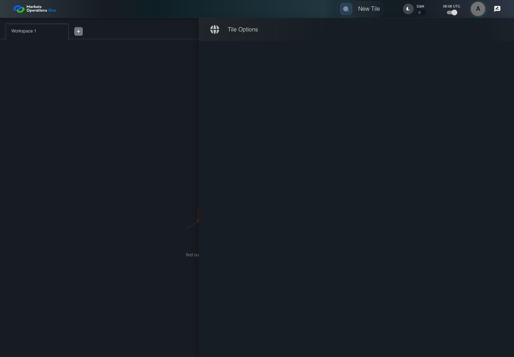

UI-CAT-020 show the empty catalog
PASS · application/run-050/ui-cat-020-show-the-empty-catalog-3aa71d5b7051-attempt-1 · ACTUAL_APPLICATION_LOCAL_SERVICES
Actual current React shell. Controlled login, validation, and activity renewal responses supply UI-USER-01, catalog, and entities. A controlled SystemJS React container displays routes and parameters. Local fixture SVGs replace catalog images. Identity, entitlements, and business tenant behavior are not established.
2026-10-22T06:08:15.080Z to 2026-10-22T06:08:20.307Z
Assertions and result · Artifact manifest · Exact run inputs and source hashes
Result SHA-256:252c0bb8b29028f3e63264770ea0146e260ffd56eab0f8b627337f22a92f60dcScreenshot capture: CAPTURED. Named frames: 6.
Step screenshot evidence: COMPLETE. 5/5 canonical steps have execution screenshots.
Canonical step timeline
Given User A is authenticated as fixture UI-USER-01 with the case-specific permissions
Execution: PASSED.
1. step-01 Visible state after step 1: Given User A is authenticated as fixture UI-USER-01 with the case-specific permissions
2026-10-22T06:08:17.241Z · 1440×1000
Step: /Users/lushevol/code/github/ratan-release-impact/workbench/tasks/ui-test-coverage-20261022/test-cases.md:6872
SHA-256:fcdb7e886745751817c5a9e551fd47a62899d6497092ca8f80a5c9e3d9e7d6d1And the catalog has no categories
Execution: PASSED.
2. step-02 Visible state after step 2: And the catalog has no categories
2026-10-22T06:08:17.339Z · 1440×1000
Step: /Users/lushevol/code/github/ratan-release-impact/workbench/tasks/ui-test-coverage-20261022/test-cases.md:6873
SHA-256:fcdb7e886745751817c5a9e551fd47a62899d6497092ca8f80a5c9e3d9e7d6d1When User A clicks section with text "New Tile" inside the shell application bar
Execution: PASSED.3. step-03 Visible state after step 3: When User A clicks section with text "New Tile" inside the shell application bar
2026-10-22T06:08:17.558Z · 1440×1000
Step: /Users/lushevol/code/github/ratan-release-impact/workbench/tasks/ui-test-coverage-20261022/test-cases.md:6874
SHA-256:8b2598a6c5e6f641eca00f9061474803d1d64bcdc9daf706d95357df3c9f65b0Then section with text "Tile Options" inside the right-side shell drawer is visible
Execution: PASSED.
4. step-04 Visible state after step 4: Then section with text "Tile Options" inside the right-side shell drawer is visible
2026-10-22T06:08:17.717Z · 1440×1000
Step: /Users/lushevol/code/github/ratan-release-impact/workbench/tasks/ui-test-coverage-20261022/test-cases.md:6875
SHA-256:94164bff858110d7017925d898258d1c729bd29b23e87eac892bb54d3eb3b0deAnd the tile section count inside the right drawer titled "Tile Options" equals 0
Execution: PASSED.
5. step-05 Visible state after step 5: And the tile section count inside the right drawer titled "Tile Options" equals 0
2026-10-22T06:08:17.882Z · 1440×1000
Step: /Users/lushevol/code/github/ratan-release-impact/workbench/tasks/ui-test-coverage-20261022/test-cases.md:6876
SHA-256:94164bff858110d7017925d898258d1c729bd29b23e87eac892bb54d3eb3b0de
Additional named frames

The final visible state after the named test assertions.
2026-10-22T06:08:18.148Z · 1440×1000Step: Test source: /Users/lushevol/code/github/ratan-release-impact/workbench/e2e/audit-specs/catalog-profile-expanded.spec.ts:242
SHA-256:
94164bff858110d7017925d898258d1c729bd29b23e87eac892bb54d3eb3b0deScreenshots establish visible state only. Assertions and traces support functional claims.